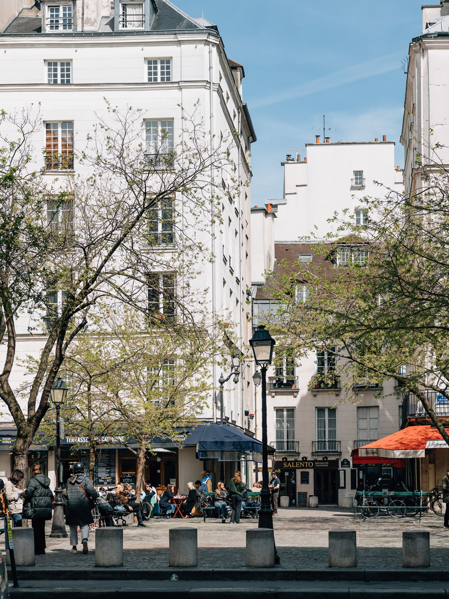
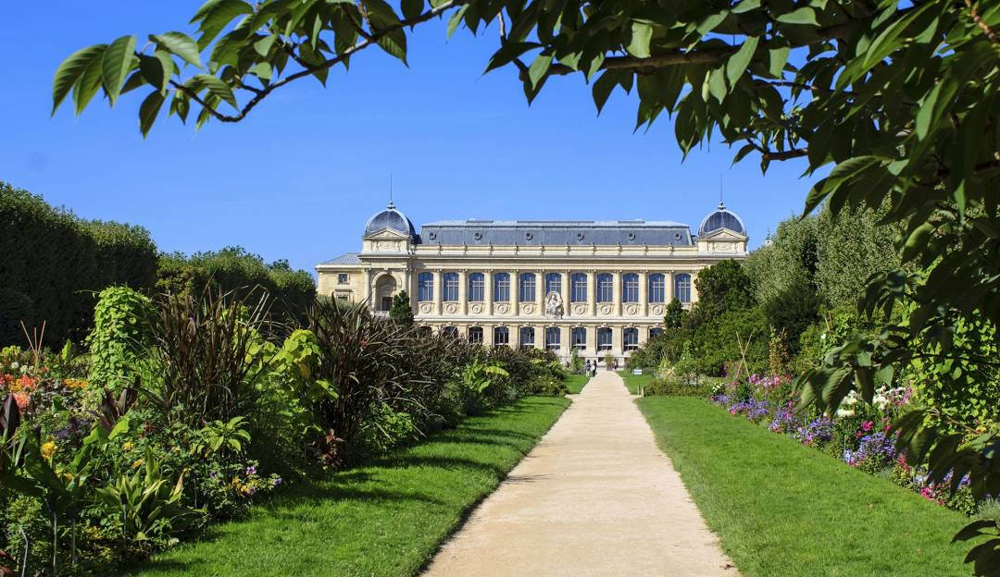

Parijs kent vele markten met allerlij vintage en antiek spullen, vers eten en andere leuke dingen om te bekijken. Zo heb je de markt bij de Basilique die erg leuk is om een paar uurtjes over heen te struinen. Maar ben je echt opzoek naar een super vintage markt, dan moet je hier zijn; Puces de Saint-Ouen. Dit is de grootste vintage en antiekmarkt van Parijs. Het ligt in het noorden van de stad en bestaat uit wel vijftien markten bij elkaar. Hierdoor is bijna heel de wijk een grote markt geworden. Het hart van de markt is Marché Dauphine. Deze is overdekt en mag je zeker niet missen als je er bent.
Le Marais is een wijk in Parijs. Het is de joodse wijk van de stad. Tegenwoordig is het ook een super hippe en locale wijk om lekker te shoppen, eten en drinken of te genieten van de kunst en cultuur die Parijs te bieden heeft. De wijk heeft marktjes, stikt van de boutiekjes en restaurantjes en heeft ook nog eens Place des Vosges en andere mooie plekken om te bezoeken. Zeker de moeite waard voor een gezellige middag!
Jardin des Plantes is een mooi park vol mooie planten, beelden en gebouwen. Ooit gebruikt als medicinale tuinen, dierentuin en het hoofdkwartier van het nationale museum van natuur historie. Het is perfect om een uurtje doorheen te wandelen en te genieten van de mooie planten midden in de stad. Zorg wel dat je niet op het heetst van de dag gaat want schaduw is er weinig te vinden.